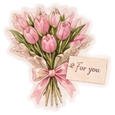
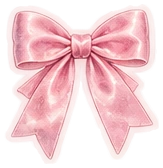

Günlüğüm ♡
📅 Bugünün tarihi
Sevgili günlüğüm... ♡
her gün yeni bir hikâye ✧


💗 Renkler🌼 Desenler🎀 Arka Planlar
🎀 Ajandamdaki stickerlarBeğendiğine dokun, sayfaya eklensin ✨
Stickerı sayfada seçip boyut çubuğunu hareket ettirerek sonradan da büyütüp küçültebilirsin. Sim silgisini açıp çizimin üzerinden geçirerek silebilirsin.
♡ Günlüğün hazırlanıyor...✿ Kendi küçük dünyan ✿